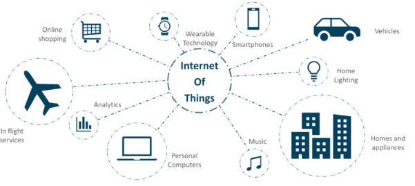

Internet of Things application page
IoT applications promise to bring immense value into our lives. With newer wireless networks, superior sensors and revolutionary computing capabilities, the Internet of Things could be the next frontier in the race for its share of the wallet.
